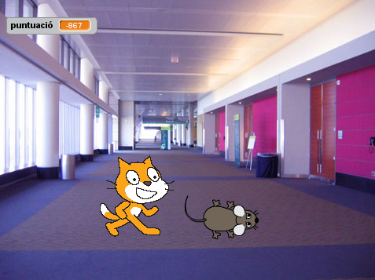
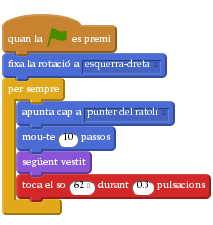
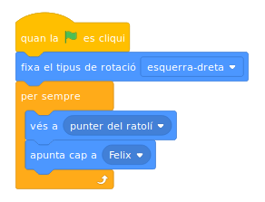
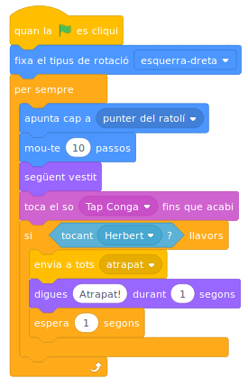
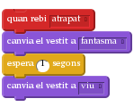
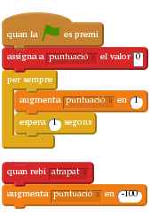

Introducció
Construirem un joc on el gat Fèlix i el ratolí Herbert juguen a atrapar. Vosaltres controlareu en Herbert amb el ratolí i heu d’intentar evitar que en Fèlix us atrapi. Quant més temps eviteu que us atrapi més punts guanyareu, però no us deixeu agafar perquè perdreu punts!

Pas 1: En Fèlix segueix el punter del ratolí
Llista de tasques
- Creeu un nou projecte.
- Feu doble clic a l’escenari i canvieu a la pestanya dels fons, llavors seleccioneu el fons interiors/hall. Suprimiu el fons blanc original.
- Canvieu el nom del personatge per Fèlix.
- Assegureu-vos que en Fèlix només miri a esquerra i dreta utilitzant el bloc "fixa el tipus de rotació"
Creeu aquest programa:

Proveu el projecte
Feu clic a la bandera verda.
- En Fèlix, segueix el punter del ratolí?
- Quan es mou, us sembla com si caminés?
- Es mou a una velocitat adequada?
Deseu el projecte
Pas 2: En Fèlix persegueix en Herbert
A continuació volem que en Fèlix persegueixi en Herbert, enlloc del punter del ratolí.
Llista de tasques
- Creeu un nou personatge escollint, al costat de
Nou personatge:el botó amb la icona d’un gat. Trieu el personatge Mouse1 de l’apartat d’animals. - Canvieu el nom del personatge per Herbert tocant la
iblava. - Editeu el vestit i feu-l’ho més petit que el de’n Fèlix. Cal fer clic al vestit i arrossegar un dels extrems de la caixa que apareix.
- Assegureu-vos que en Herbert només miri a esquerra i dreta utilitzant el bloc “fixa el tipus de rotació”.
Doneu-li aquest programa a en Herbert:

Proveu el projecte
Feu clic a la bandera verda.
- En Herbert, segueix el punter del ratolí?
- En Fèlix persegueix al Herbert?
Pas 3: En Fèlix diu quan ha atrapat en Herbert
Volem que en Fèlix sàpiga quan ha atrapat en Herbert i que ens ho digui.
Llista de tasques
Modifiqueu el programa de’n Felix així:
![Quan la BANDERA VERDA es premi
fixa la rotació a [esquerra-dreta v]
per sempre
apunta cap a [punter del ratolí v]
mou-te (10) passos
següent vestit
toca el tambor [3 v] durant (0.3) pulsacions
si <tocant [Herbert v]?> llavors
digues [Atrapat!] durant (1) segons
end
end](4a1cacedaad2110e59efa2dbb3908e1980894ce9.png)
Proveu el projecte
Feu clic a la bandera verda.
- En Fèlix diu quan ha atrapat en Herbert?
Deseu el projecte
Pas 4: En Herbert es converteix en un fantasma quan l’atrapen
En lloc de que en Fèlix digui quelcom, volem que en Herbert es converteixi en un fantasma quan l’atrapin.
Llista de tasques
Canvieu el programa de’n Fèlix per tal d’enviar aquest missatge quan atrapi en Herbert.

- Importeu un nou vestit per en Herbert de fantasia/ghost-c.
- Editeu-l’ho per fer-lo més petit. N’hi hauria d’haver prou amb sis clics al botó encongir.
- Canvieu els noms dels vestits d’en Herbert de manera que vestit de ratolí s’anomeni ‘viu’ i el de fantasma ’fantasma’.
Creeu un nou programa per tal de convertir en Herbert en un fantasma:

Proveu el projecte
Feu clic a la bandera verda.
- Quan atrapeu en Herbert, es converteix en un fantasma?
- En Fèlix fa els sons adequats en cada moment?
- En Fèlix roman quiet prou temps per a que en Herbert es pugui escapar?
Deseu el projecte
Pas 5: Actualitzar el marcador
Afegirem un marcador de manera que sabrem com de bé mantenim al Herbert en vida. Començarem amb el marcador a zero i l’incrementarem una unitat cada segon. Si en Fèlix atrapa en Herbert, reduirem el marcador en cent unitats.
Llista de tasques
Cliqueu l’apartat
Dades, i creeu una variable de nompuntuació, fixant-vos en seleccionar la opció “per a tots els personatges”.Creeu aquests dos programes a l’escenari:

Proveu el projecte
Feu click a la bandera verda.
- El marcador, augmenta una unitat per segon?
- Quan en Fèlix atrapa en Herbert, el marcador disminueix cent unitats?
- Què passa quan atrapeu en Herbert abans que el marcador arribi a cent unitats?
- Quan comenceu una nova partida, el marcador torna a zero?
Deseu el projecte
Molt bé, heu acabat! Ara ja podeu gaudir del joc!
No us oblideu que podeu compartir el joc amb amics i familiars fent clic a Comparteix al menú!